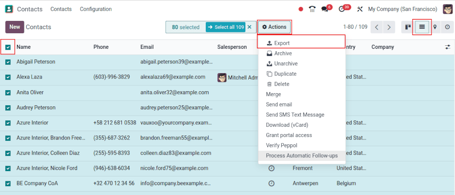
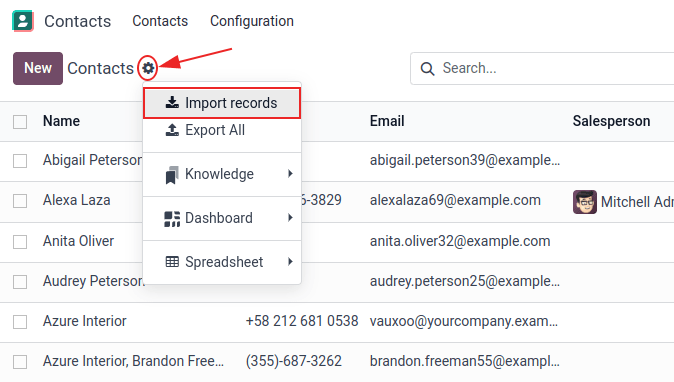

导出和导入数据¶
在 Odoo 中，有时需要导出或导入数据以运行报告或修改数据。本文件介绍如何将数据导入和导出 Odoo。
重要
有时，用户会遇到 ‘超时’ 错误，或者由于记录过大而无法处理。这种情况可能发生在导出文件较大或导入文件过大的情况下。为了规避记录大小的限制，可以分批处理导出或导入。
从 Odoo 导出数据¶
使用数据库时，有时需要将数据导出为不同的文件。不过，Odoo 在每个可用应用程序中都提供了精确、简便的报告工具。
使用 Odoo，可以导出任何记录中任何字段的值。为此，请在需要导出的项目上激活列表视图 ( (list) icon)，然后选择要导出的记录。要选择记录，请勾选相应记录旁边的复选框。最后，点击 Actions，然后点击 导出。
点击 导出 时，会弹出一个 导出数据 窗口，其中有多个导出数据的选项：

如果勾选 我要更新数据（兼容导入导出） 选项，系统将只显示可导入的字段。这对 现有记录需要更新 的情况很有帮助。这就像一个筛选器。如果不勾选该复选框，就会提供更多的字段选项，因为它会显示所有字段，而不仅仅是可以导入的字段。
导出时，可选择以两种格式导出：
.csv`和.xls`。使用.csv，项目之间用逗号分隔，而`.xls`则保存文件中所有工作表的信息，包括内容和格式。这些是可以导出的项目。使用 >（右箭头） 图标显示更多子字段选项。使用 搜索 栏查找特定字段。要更有效地使用 搜索 选项，请点击所有 > （右箭头） 以显示所有字段。
+（加号） 图标按钮用于在 要导出的字段 列表中添加字段。
选定字段左侧的 ↕️（上下箭头） 可用来上下移动字段，以更改它们在导出文件中的显示顺序。使用 ↕️ （向上向下箭头） 图标进行拖放。
🗑️（垃圾桶） 图标用于删除字段。点击 ️🗑️（垃圾桶） 图标删除字段。
对于经常性报告，保存导出预设很有帮助。选择所有需要的字段，并点击模板下拉菜单。然后点击 新模板，为刚刚创建的导出命名。点击 :guilabel:` 💾（软驱）` 图标保存配置。下次需要导出相同的列表时，从下拉菜单中选择之前保存的相关模板。
小技巧
了解字段的外部标识符很有帮助。例如，导出用户界面中的 相关公司 等于 *parent_id*（外部标识符）。这很有帮助，因为这样导出的唯一数据就是应修改和重新导入的数据。
将数据导入 Odoo¶
在实施过程中，或在需要 批量更新 数据时，将数据导入 Odoo 非常有用。以下文档介绍了如何将数据导入 Odoo 数据库。
警告
导入是永久性的，**无法**撤销。不过，可以使用筛选器（创建日期`或`最后修改日期）来识别导入时更改或创建的记录。
小技巧
激活 开发者模式 会更改左侧菜单中的可见导入设置。这样做会显示 菜单。该高级菜单包括两个选项：导入时追踪历史记录`和 :guilabel: 允许与子字段匹配`。

如果模型使用 openchatter，则 导入时追踪历史记录 选项会在导入过程中设置订阅并发送通知，但会导致导入速度变慢。
如果选择了 允许匹配子字段 选项，则在导入时，字段内的所有子字段都将用于匹配 Odoo 字段 下的字段。
开始¶
可使用 Excel (.xlsx)或 CSV（逗号分隔值） (.csv)格式将数据导入任何 Odoo 业务对象中。这包括：联系人、产品、银行对账单、日记账分录和订单。
打开要导入/填充数据的对象的视图，然后点击 。
点击 导入记录 后，Odoo 会显示一个单独的页面，其中包含可下载的模板，并可使用公司自己的数据进行填充。这些模板可以一键导入，因为数据映射已经完成。要下载模板，请点击页面中央的 导入客户模板。
重要
导入 CSV（逗号分隔值） 文件时，Odoo 提供 格式话 选项。导入 Excel 专有文件类型（.xls, .xlsx）时，这些选项**不会**出现。

对*格式*选项进行必要调整，并确保 Odoo 字段`和 :guilabel:`文件栏 中的所有列都没有错误。最后，点击 导入，以导入数据。
调整模板¶
导入工具中提供了最常用的导入数据（联系人、产品、银行对账单等）的导入模板。您可以使用任何电子表格软件（Microsoft Office、OpenOffice、*Google Drive*等）打开它们。
下载模板后，请按照以下步骤操作：
添加、删除和排序列，以最适应数据结构。
强烈建议**不要**删除 外部 ID (ID) 列（原因见下一节）。
通过拖动 外部 ID (ID) 列中的 ID 排序，为每条记录设置唯一 ID。

注解
添加新列时，如果其标签不适合 Odoo 中的任何字段，Odoo 可能无法自动映射。不过，可以在测试导入时手动映射新列。在下拉菜单中搜索相应字段。

然后，在导入文件中使用此字段的标签，以确保将来的导入成功。
小技巧
另一个找出正确导入列名的有用方法是使用应导入的字段导出一个示例文件。这样，如果没有样本导入模板，名称也会准确无误。
从其他应用程序导入¶
外部 ID (ID) 是行项目的唯一标识符。为便于向 Odoo 过渡，请随意使用以前软件中的 ID。
导入时设置ID不是强制性的，但在许多情况下会有所帮助：
要重新创建不同记录之间的关系，应使用原始应用程序中的唯一标识符将其映射到 Odoo 中的 外部 ID (ID) 列。
当导入另一条记录并链接到第一条记录时，使用 **XXX/ID**（XXX/外部 ID）作为原始唯一标识符。也可使用其名称查找该记录。
警告
需要注意的是，如果两个（或多个）记录具有相同的外部 ID*，就会发生冲突。
缺少映射列的字段¶
Odoo 会根据文件的前十行，启发式地为导入文件中的每一列查找字段类型。
例如，如果有一列只包含数字，那么只有*整数*类型的字段才会显示为选项。
虽然这种行为在大多数情况下是有益的，但也有可能会失败，或者列可能会被映射到默认情况下没有提出的字段。
如果出现这种情况，请选中 显示关系字段的字段（高级）选项，然后每一列就会出现完整的字段列表。
更改数据导入格式¶
注解
Odoo 可自动检测列是否为日期，并尝试从一组最常用的日期格式中猜测日期格式。虽然这个过程可用于许多日期格式，但有些日期格式却无法识别。可能会因日月格式颠倒而造成混乱；在诸如“01-03-2016”这样的日期中，难以判断哪部分代表月份，哪部分代表日。
导入 CSV （逗号分隔值） 文件时，Odoo 提供 格式化 选项。
要查看 Odoo 从文件中找到的日期格式，请检查文件选择器下点击选项时显示的 日期格式。如果格式不正确，请使用 ISO 8601 定义格式，将其更改为首选格式。
重要
ISO 8601 是一项国际标准，涵盖全球范围内日期和时间相关数据的交换和通信。例如，日期格式应为`YYYY-MM-DD`。因此，以 1981 年 7 月 24 日为例，应写成 1981-07-24。
小技巧
导入 Excel 文件（.xls、.xlsx）时，请考虑使用 日期单元格 来存储日期。这样，无论日期在 Odoo 中是如何格式化的，都能保持本地显示的日期格式。导入 CSV（逗号分隔值） 文件时，使用 Odoo 的 格式化 部分选择要导入的日期格式列。
导入带有货币符号的数字¶
Odoo 完全支持用带圆括号的数字代表负数，以及带货币符号的数字。Odoo 还能自动识别使用的千位分隔符和小数分隔符。然而，如果使用 Odoo 不熟悉的货币符号，可能无法将其识别为数字，导致导入过程失败。
注解
导入 CSV（逗号分隔值） 文件时，左侧栏会出现 格式化 菜单。在这些选项下，可以更改 千位分隔符。
支持的数字格式示例（以“三万两千”为例）
32.000,00
32000,00
32,000.00
-32000.00
(32000.00)
$ 32.000,00
(32000.00 €)
不合要求的例子：
ABC 32.000,00
$ (32.000,00)
重要
数字周围的 () （括号） 表示该数字为负值。货币符号**必须**放在括号内，Odoo 才能将其识别为负数货币值。
无法正确显示导入预览表¶
默认情况下，导入预览使用逗号作为字段分隔符，引号作为文本分隔符。如果 CSV（逗号分隔值） 文件没有这些设置，可以在选择:abbr:CSV（逗号分隔值） 文件后，在:guilabel:导入 CSV（逗号分隔值） 文件栏下方显示的:guilabel:`格式设置`选项中进行修改。
重要
如果 CSV（逗号分割值）`文件使用制表符作为分隔符，Odoo **不会**检测分隔符。需要在电子表格应用程序中修改文件格式选项。请参阅以下 :ref:`更改 CSV 文件格式<export_import_data/change-csv> 部分。
在电子表格应用程序中更改 CSV 文件格式¶
在电子表格应用程序中编辑和保存:abbr:CSV（逗号分隔值）`文件时，分隔符和定届符会应用计算机的区域设置。Odoo 建议使用 *OpenOffice* 或 *LibreOffice*，因为这两个应用程序允许修改所有三个选项（在 *LibreOffice* 应用程序中，转到 :menuselection:’另存为’对话框 –> 勾选’编辑筛选设置’ –> 保存`）。
Microsoft Excel 可以在保存时修改编码（）。
数据库 ID 与外部 ID 的区别¶
某些字段定义了与另一个对象的关系。例如，联系人的国家/地区与’国家/地区’对象记录关联。导入此类字段时，Odoo 必须重新创建不同记录之间的关联。为了帮助导入此类字段，Odoo 提供了三种机制。
重要
每个导入的字段**仅限一个**机制。
例如，要参考联系人所在的国家/地区，Odoo 建议导入三个不同的字段：
国家/地区：国家/地区名称或代码
国家/数据库 ID：记录的唯一 Odoo ID，由 ID PostgreSQL 列定义
国家/外部 ID：另一个应用程序（或导入该记录的 `.XML`文件）中引用的该记录的 ID
以比利时为例，请使用以下三种方式之一进行导入：
国家/地区：
比利时国家/数据库 ID：
21国家/外部 ID：
base.be
根据公司的需要，使用这三种方式之一来引用关系中的记录。下面是一个根据需要使用其中一种或另一种方式的示例：
使用 国家：数据来自手动创建的 CSV （逗号分隔值） 文件时，这是最简单的方法。
使用 国家/数据库 ID：应该很少使用此方法。它主要由开发人员使用，因为它的主要优点是不会产生冲突（可能会有多个同名记录，但它们始终具有独特的数据库 ID）
使用 国家/外部 ID：从第三方应用程序导入数据时，使用 外部 ID。
使用 * 外部 ID* 时，导入 CSV（逗号分隔值） 文件时，在 外部 ID (ID) 列中定义导入的每条记录的 * 外部 ID*。然后，就可以用 字段/外部 ID 等列来引用该记录。以下两个 CSV （逗号分隔值） 文件提供了一个产品及其类别的示例。
导入关系字段¶
Odoo 对象总是与许多其他对象相关联（例如，产品与产品类别、产品属性、供应商等相关联）。要导入这些关系，首先需要从相关对象的列表菜单中导入相关对象的记录。
根据具体情况，可以使用相关记录的名称或 ID 来实现这一点。如果两条记录的名称相同，则应使用 ID。在这种情况下，在列标题末尾添加 / ID`（例如，产品属性：`产品属性/属性/ID）。
字段上的多个匹配的选项¶
例如，如果有两个产品类别的子名称为 可销售`（例如，`其他产品/可销售 和 其他产品/可销售），则验证会停止，但仍可导入数据。但是，Odoo 建议不要导入数据，因为所有数据都将关联到*产品类别*列表（其他产品/可销售）中的第一个`可销售`类别。Odoo 建议修改其中一个重复值，或产品类别层次结构。
但是，如果公司不想更改产品类别的配置，Odoo 建议使用该字段 ‘类别’ 的*外部 ID*。
导入 many2many 关系字段¶
标签之间应该用逗号隔开，不能有任何间距。例如，如果一个客户需要关联到两个标签：制造商 和 零售商，那么`制造商，零售商`就需要在:abbr:`CSV（逗号分隔值）`文件的同一列中编码。
:d拥有：“制造商，零售商<export_import_data/m2m_customers_tags.csv>的CSV文件`
导入 one2many 关系¶
如果一家公司要导入包含多个订单行的销售订单，则必须在 CSV（逗号分隔值） 文件中为每个订单行保留特定行。第一行订单与订单相关信息导入在同一行。任何其他行都需要一个附加行，该行中没有任何与订单相关的字段信息。
举例来说，这里有一个 CSV（逗号分隔值） 文件，根据演示数据，可以导入一些报价：
以下:abbr:CSV（逗号分隔值） 文件显示了如何导入采购订单及其各自的采购订单行：
以下 CSV（逗号分割值） 文件展示了如何导入客户及其各自的联系人：
多次导入记录¶
如果导入的文件包含 外部 ID 或 数据库 ID 其中一列，则已导入的记录将被修改，而不是创建。这非常有用，因为它允许用户多次导入相同的 CSV（逗号分隔值） 文件，并在两次导入之间进行一些更改。
Odoo 负责创建或修改每条记录，具体取决于它是否是新记录。
该功能允许公司使用 Odoo 中的*导入/导出工具*修改电子表格应用程序中的一批记录。
未提供特定字段的值¶
如果 CSV 文件中未设置所有字段，Odoo 会为每个未定义的字段分配默认值。但是，如果字段在 CSV （逗号分隔值） 文件中设置为空值，Odoo 会在字段中设置空值，而不是分配默认值。
将不同表格从 SQL 应用程序导出/导入 Odoo¶
如果需要从不同的表中导入数据，则需要在属于不同表的记录之间重新创建关系。例如，如果导入了公司和人员，就需要重新创建每个人和他们工作的公司之间的链接。
要管理表格之间的关系，请使用 Odoo 的 外部 ID 功能。记录的 外部 ID 是该记录在其他应用程序中的唯一标识符。在所有对象的所有记录中，外部 ID 必须是唯一的，因此最好在`外部 ID`前加上应用程序或表的名称。例如，company_1、person_1，而不是 1）。
举例来说，假设有一个 SQL 数据库，其中有两个表格需要导入：公司和人员。每个人都属于一家公司，因此必须重新创建该员工和工作的公司之间的链接。
使用 PostgreSQL 数据库 样本测试此示例。
首先，导出所有公司及其 外部 ID。在 PSQL 中编写以下指令：
> copy (select 'company_'||id as "External ID",company_name as "Name",'True' as "Is a Company" from companies) TO '/tmp/company.csv' with CSV HEADER;
这条 SQL 指令将创建以下 CSV（逗号分隔值） 文件：
External ID,Name,Is a Company
company_1,Bigees,True
company_2,Organi,True
company_3,Boum,True
要为链接到公司的人员创建 CSV（逗号分隔值） 文件，请在 PSQL 中使用以下 SQL 命令：
> copy (select 'person_'||id as "External ID",person_name as "Name",'False' as "Is a Company",'company_'||company_id as "Related Company/External ID" from persons) TO '/tmp/person.csv' with CSV
它会生成以下 CSV（逗号分隔值） 文件：
External ID,Name,Is a Company,Related Company/External ID
person_1,Fabien,False,company_1
person_2,Laurence,False,company_1
person_3,Eric,False,company_2
person_4,Ramsy,False,company_3
在该文件中，Fabien 和 Laurence 在 Bigees 公司（company_1）工作，Eric 在 Organi 公司工作。人员和公司之间的关系通过公司的外部 ID 来建立。外部 ID 的前缀为表格名称，以避免人员和公司之间出现 ID 冲突（例如，person_1和company_1在原始数据库中的 ID 都是 1）。
生成的两个文件无需任何修改即可导入 Odoo。导入这两个 CSV（逗号分隔值） 文件后，会出现四个联系人和三个公司（前两个联系人与第一个公司相关联）。请记住，需要首先导入公司，然后再导入人员。
更新 Odoo 中的数据¶
只要 外部 ID 保持一致，就可以通过数据导入批量更新现有数据。
准备数据导出¶
要通过导入更新数据，首先导航到要更新的数据，然后选择 |list|激活列表视图。在列表的最左侧，勾选要更新的任何记录的复选框。然后，点击 |actions|，并从下拉菜单中选择 导出。
在弹出的 导出数据 窗口中，勾选标有 我想更新数据（兼容导入导出） 复选框。这将自动在导出中包含 外部 ID。此外，它还会限制 :guilabel:`要导出的字段 ` 列表，使其 只 包括可导入的字段。
注解
除非手动添加，否则 外部 ID 字段 不会 出现在 要导出的字段 列表中，但仍会包含在导出中。但是，如果勾选了 我要更新数据（兼容导入的导出） 复选框，则导出时会包含该字段。
使用弹出窗口中的 选项 选择导出所需的字段，然后点击 导出。
导入更新数据¶
导出后，对数据文件进行必要的修改。文件准备就绪后，可按照与正常数据导入相同的流程进行 导入。
危险
更新数据时，外部 ID 保持一致极为重要，因为这是系统识别记录的方式。如果 ID 被更改或删除，系统可能会添加一条重复的记录，而不是更新现有记录。